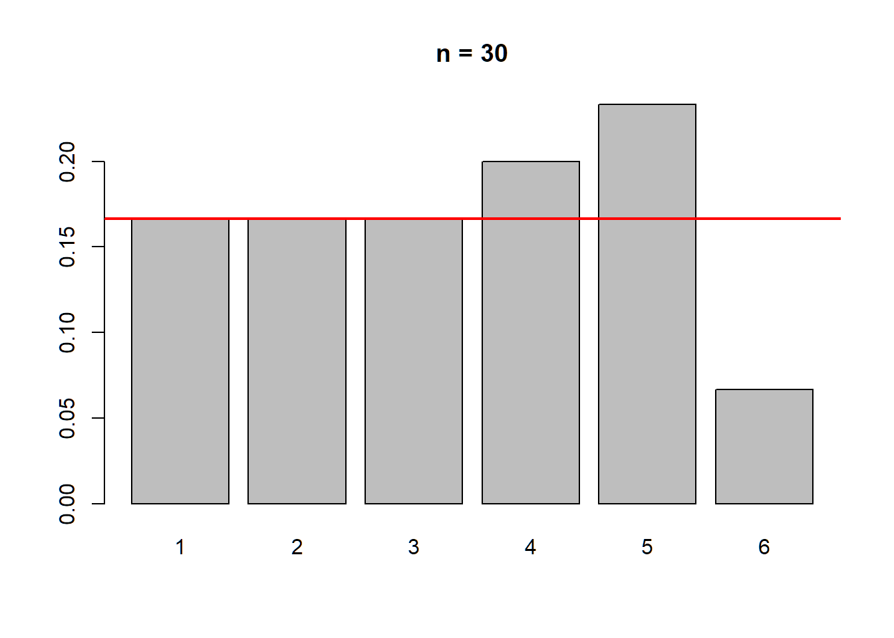
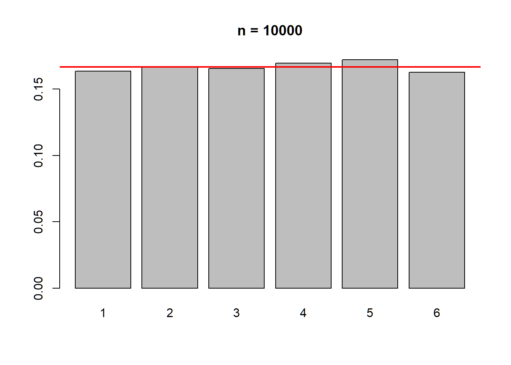

Ve al sitio web oficial de R (https://cran.r-project.org/) y descarga la versión adecuada para tu sistema operativo (Windows, macOS o Linux). Sigue las instrucciones de instalación.
RStudio es un entorno de desarrollo integrado (IDE) popular para R que facilita la escritura, ejecución y visualización de código R. Puedes descargar RStudio desde https://www.rstudio.com/products/rstudio/download/.
También se puede ejecutar R/RStudio en la nube sin necesidad de instalar nada en el ordenador a través de plataformas como Posit Cloud.
R es un lenguaje de programación y un entorno de software utilizado principalmente para el análisis estadístico y la visualización de datos. Sin embargo, también se puede utilizar como una calculadora avanzada. En esta primera parte de la Práctica 2, se mostrarán los conceptos básicos para usar R como una calculadora.
Abre R o RStudio. Deberías ver una consola donde puedes ingresar comandos de R.
2 + 2## [1] 4sqrt(16)## [1] 41 + 2 * 4## [1] 9(1 + 2) * 4## [1] 123 + 5; 3 + 6 # las órdenes se separan por ;## [1] 8## [1] 9pi # R conoce pi## [1] 3.141593Los ficheros script se pueden guardar utilizando Archivo → Guardar como… y eligiendo a continuación la ubicación que interesa en el disco duro del ordenador.
Por defecto R utiliza una carpeta de trabajo donde guardará la información.
getwd() # devuelve la carpeta de trabajo
# Cambiar la carpeta de trabajo
setwd("/ruta/a/tu/carpeta")
# Ejemplo en Windows
setwd("c:/")| Función | Código en R |
|---|---|
| Raíz cuadrada de x | sqrt(x) |
| Exponencial de x | exp(x) |
| Logaritmo neperiano | log(x) |
| Nº de elementos de un vector | length(x) |
| Suma los elementos del vector | sum(x) |
| Seno de x | sin(x) |
| Coseno de x | cos(x) |
| Tangente de x | tan(x) |
| Media | mean(x) |
| Desviación típica | sd(x) |
| Varianza | var(x) |
| Mediana | median(x) |
| Quantiles | quantile(x, p) |
| Máximo y Mínimo | range(x) |
| Ordenación | sort(x) |
| Resumen estadístico | summary(x) |
| Operador | Descripción |
|---|---|
+ |
Suma |
- |
Resta |
* |
Multiplicación |
/ |
División |
^ |
Potencia |
%/% |
División entera |
| Operador | Descripción |
|---|---|
== |
Igualdad |
!= |
Diferente de |
< |
Menor que |
> |
Mayor que |
<= |
Menor o igual |
>= |
Mayor o igual |
| Operador | Descripción |
|---|---|
& |
Y lógico |
| |
O lógico |
! |
No lógico |
datos <- c(1, 5, 10, 3)
min(datos)## [1] 1max(datos)## [1] 10which.min(datos)## [1] 1which.max(datos)## [1] 3range(datos)## [1] 1 10mean(datos)## [1] 4.75median(datos)## [1] 4sum(datos)## [1] 192 * datos## [1] 2 10 20 6datos == 5## [1] FALSE TRUE FALSE FALSEdatos == 5 & datos == 1## [1] FALSE FALSE FALSE FALSEdatos == 5 | datos == 1## [1] TRUE TRUE FALSE FALSE3 < 2## [1] FALSE2 < 3 & 4 < 1## [1] FALSE2 < 3 | 4 < 1## [1] TRUEresultado_suma <- 5 + 3
resultado_resta <- 10 - 2
resultado_multiplicacion <- 4 * 6
resultado_division <- 20 / 5
resultado_potenciacion <- 2^3
print(resultado_suma)## [1] 8x1 <- TRUE # logical
x2 <- 3L # integer
x3 <- 3.4 # numeric
x5 <- "Esto es una cadena de caracteres" # character
ls.str()## datos : num [1:4] 1 5 10 3
## resultado_division : num 4
## resultado_multiplicacion : num 24
## resultado_potenciacion : num 8
## resultado_resta : num 8
## resultado_suma : num 8
## x1 : logi TRUE
## x2 : int 3
## x3 : num 3.4
## x5 : chr "Esto es una cadena de caracteres"# Conversiones
as.integer(x1)## [1] 1as.integer(x3)## [1] 3# Comprobaciones
is.integer(x1)## [1] FALSEis.logical(x1)## [1] TRUEis.integer(x2)## [1] TRUEAl iniciar el programa R se cargan por defecto una serie de librerías
básicas. El paquete base contiene las bases de R,
incluyendo funciones como sum, max, así como
los principales tipos de objetos: vector, matriz, data.frame.
A veces es necesario cargar otras librerías específicas. Esto se hace a través de los llamados paquetes (packages).
install.packages("nombre_del_paquete")
library(nombre_del_paquete)
library() # lista de los paquetes disponiblesclustcurv# install.packages("clustcurv")
library(clustcurv) # carga la librería
library(help = clustcurv) # documentación de la librería?max
help(max) # equivalente a ?max
help(mean) # ayuda de la función meanLos vectores son una estructura de datos fundamental en R. Se crean
utilizando la función c().
x <- c(4.1 , 5, 6.35)
x## [1] 4.10 5.00 6.35print(x)## [1] 4.10 5.00 6.35x <- c(7, x, 2)
x # Imprime el vector## [1] 7.00 4.10 5.00 6.35 2.00mode(x) # Devuelve el tipo de datos del vector## [1] "numeric"length(x) # Devuelve el número de elementos del vector## [1] 5y <- c("Hola", "Adios")
y## [1] "Hola" "Adios"mode(y)## [1] "character"y <- c(y, x, TRUE)
y## [1] "Hola" "Adios" "7" "4.1" "5" "6.35" "2" "TRUE"mode(y)## [1] "character"length(y)## [1] 8mi_vector <- c(8, 9, 3, 4, 5)
elemento <- mi_vector[2]
elemento## [1] 9mode(mi_vector)## [1] "numeric"(x <- 1:5) ## [1] 1 2 3 4 5# El operador : genera una secuencia de enteros consecutivos entre dos valores. Los paréntesis exteriores hacen que el resultado se imprima automáticamente.
seq(1, 5, 0.5)## [1] 1.0 1.5 2.0 2.5 3.0 3.5 4.0 4.5 5.0seq(from = 1, to = 5, length = 6)## [1] 1.0 1.8 2.6 3.4 4.2 5.0sample(1:6, size = 10, replace = TRUE) # secuencias aleatorias## [1] 5 4 1 3 6 3 5 6 4 2# Crear una matriz 3x3
matrix(1:9, nrow = 3, ncol = 3)## [,1] [,2] [,3]
## [1,] 1 4 7
## [2,] 2 5 8
## [3,] 3 6 9# Acceder al elemento en la segunda fila y tercera columna
mi_matriz = matrix(1:9, nrow = 3, ncol = 3)
print(mi_matriz)## [,1] [,2] [,3]
## [1,] 1 4 7
## [2,] 2 5 8
## [3,] 3 6 9elemento <- mi_matriz[2, 3]
print("**-------**")## [1] "**-------**"print(elemento)## [1] 8matrix(1:8, nr = 2, nc = 4)## [,1] [,2] [,3] [,4]
## [1,] 1 3 5 7
## [2,] 2 4 6 8matrix(1:8, 2, 4) # por columnas (como Fortran)## [,1] [,2] [,3] [,4]
## [1,] 1 3 5 7
## [2,] 2 4 6 8matrix(1:8, 2, 4, byrow = TRUE) # por filas## [,1] [,2] [,3] [,4]
## [1,] 1 2 3 4
## [2,] 5 6 7 8x <- matrix(1:6, 2, 3)
x## [,1] [,2] [,3]
## [1,] 1 3 5
## [2,] 2 4 6x[2, ] # segunda fila## [1] 2 4 6x[, 2] # segunda columna## [1] 3 4x[1, 1:2] # primera fila, columnas 1ª y 2ª## [1] 1 3x <- array(1:24, dim = c(4, 3, 2))
x## , , 1
##
## [,1] [,2] [,3]
## [1,] 1 5 9
## [2,] 2 6 10
## [3,] 3 7 11
## [4,] 4 8 12
##
## , , 2
##
## [,1] [,2] [,3]
## [1,] 13 17 21
## [2,] 14 18 22
## [3,] 15 19 23
## [4,] 16 20 24x1 <- x[, , 1]; x1## [,1] [,2] [,3]
## [1,] 1 5 9
## [2,] 2 6 10
## [3,] 3 7 11
## [4,] 4 8 12x2 <- x[, 2, 1]; x2## [1] 5 6 7 8cbind(x, c(50, 55))## x
## [1,] 1 50
## [2,] 2 55
## [3,] 3 50
## [4,] 4 55
## [5,] 5 50
## [6,] 6 55
## [7,] 7 50
## [8,] 8 55
## [9,] 9 50
## [10,] 10 55
## [11,] 11 50
## [12,] 12 55
## [13,] 13 50
## [14,] 14 55
## [15,] 15 50
## [16,] 16 55
## [17,] 17 50
## [18,] 18 55
## [19,] 19 50
## [20,] 20 55
## [21,] 21 50
## [22,] 22 55
## [23,] 23 50
## [24,] 24 55rbind(x, c(50, 55, 60))## [,1] [,2] [,3] [,4] [,5] [,6] [,7] [,8] [,9] [,10] [,11] [,12] [,13] [,14]
## x 1 2 3 4 5 6 7 8 9 10 11 12 13 14
## 50 55 60 50 55 60 50 55 60 50 55 60 50 55
## [,15] [,16] [,17] [,18] [,19] [,20] [,21] [,22] [,23] [,24]
## x 15 16 17 18 19 20 21 22 23 24
## 60 50 55 60 50 55 60 50 55 60# Crear dos matrices
matriz_a <- matrix(1:4, nrow = 2)
matriz_b <- matrix(5:8, nrow = 2)
print(matriz_a)## [,1] [,2]
## [1,] 1 3
## [2,] 2 4print(matriz_b)## [,1] [,2]
## [1,] 5 7
## [2,] 6 8# Sumar las matrices
resultado_suma <- matriz_a + matriz_b
print(resultado_suma)## [,1] [,2]
## [1,] 6 10
## [2,] 8 12# Multiplicar las matrices (producto matricial)
resultado_multiplicacion <- matriz_a %*% matriz_b
print(resultado_multiplicacion)## [,1] [,2]
## [1,] 23 31
## [2,] 34 46# Transpuesta
mi_matriz <- matrix(1:6, nrow = 2)
print(mi_matriz)## [,1] [,2] [,3]
## [1,] 1 3 5
## [2,] 2 4 6matriz_transpuesta <- t(mi_matriz)
print(matriz_transpuesta)## [,1] [,2]
## [1,] 1 2
## [2,] 3 4
## [3,] 5 6| Función | Descripción |
|---|---|
dim(), nrow(), ncol() |
Número de filas y/o columnas |
diag() |
Diagonal de una matriz |
* |
Multiplicación elemento a elemento |
%*% |
Multiplicación matricial |
cbind(), rbind() |
Encadenamiento de columnas o filas |
t() |
Transpuesta de una matriz |
solve(A) |
Inversa de la matriz A |
solve(A, b) |
Solución del sistema de ecuaciones |
qr() |
Descomposición QR |
eigen() |
Autovalores y autovectores |
svd() |
Descomposición en valores singulares (SVD) |
temperatura <- c(20.37, 18.56, 18.4, 21.96, 29.53, 28.16,
36.38, 36.62, 40.03, 27.59, 22.15, 19.85)
humedad <- c(88, 86, 81, 79, 80, 78, 71, 69, 78, 82, 85, 83)
lluvia <- c(72, 33.9, 37.5, 36.6, 31, 16.6, 1.2, 6.8,
36.8, 30.8, 38.5, 22.7)
datos <- cbind(temperatura, humedad, lluvia)
rownames(datos) <- c("enero", "febrero", "marzo", "abril", "mayo",
"junio", "julio", "agosto", "septiembre",
"octubre", "noviembre", "diciembre")
colnames(datos)## [1] "temperatura" "humedad" "lluvia"datos## temperatura humedad lluvia
## enero 20.37 88 72.0
## febrero 18.56 86 33.9
## marzo 18.40 81 37.5
## abril 21.96 79 36.6
## mayo 29.53 80 31.0
## junio 28.16 78 16.6
## julio 36.38 71 1.2
## agosto 36.62 69 6.8
## septiembre 40.03 78 36.8
## octubre 27.59 82 30.8
## noviembre 22.15 85 38.5
## diciembre 19.85 83 22.7# Dimensiones
dim(datos)## [1] 12 3nrow(datos)## [1] 12ncol(datos)## [1] 3Los data frames son el objeto más habitual para el
almacenamiento de datos. Cada fila corresponde a un individuo y cada
columna a una variable. Se crean con la función
data.frame(), permitiendo que las columnas sean de distinto
tipo.
temperatura <- c(20.37, 18.56, 18.4, 21.96, 29.53, 28.16,
36.38, 36.62, 40.03, 27.59, 22.15, 19.85)
humedad <- c(88, 86, 81, 79, 80, 78, 71, 69, 78, 82, 85, 83)
lluvia <- c(72, 33.9, 37.5, 36.6, 31, 16.6, 1.2, 6.8,
36.8, 30.8, 38.5, 22.7)
mes <- c("enero", "febrero", "marzo", "abril", "mayo", "junio",
"julio", "agosto", "septiembre", "octubre",
"noviembre", "diciembre")
datos <- data.frame(mes, temperatura, humedad, lluvia)
print(datos)## mes temperatura humedad lluvia
## 1 enero 20.37 88 72.0
## 2 febrero 18.56 86 33.9
## 3 marzo 18.40 81 37.5
## 4 abril 21.96 79 36.6
## 5 mayo 29.53 80 31.0
## 6 junio 28.16 78 16.6
## 7 julio 36.38 71 1.2
## 8 agosto 36.62 69 6.8
## 9 septiembre 40.03 78 36.8
## 10 octubre 27.59 82 30.8
## 11 noviembre 22.15 85 38.5
## 12 diciembre 19.85 83 22.7# Acceder a una columna (temperatura)
datos$temperatura## [1] 20.37 18.56 18.40 21.96 29.53 28.16 36.38 36.62 40.03 27.59 22.15 19.85# Acceder a una columna (lluvia)
datos$lluvia## [1] 72.0 33.9 37.5 36.6 31.0 16.6 1.2 6.8 36.8 30.8 38.5 22.7# Resumen estadístico
summary(datos)## mes temperatura humedad lluvia
## Length:12 Min. :18.40 Min. :69.0 Min. : 1.20
## Class :character 1st Qu.:20.24 1st Qu.:78.0 1st Qu.:21.18
## Mode :character Median :24.87 Median :80.5 Median :32.45
## Mean :26.63 Mean :80.0 Mean :30.37
## 3rd Qu.:31.24 3rd Qu.:83.5 3rd Qu.:36.98
## Max. :40.03 Max. :88.0 Max. :72.00attachattach(datos) # permite usar variables directamente por su nombre
detach(datos) # libera las variables# RStudio viene con una serie de tablas de ejemplo
data() # listado de conjuntos de datos disponibles
data(cars) # Acceso a los datos de cars
head(cars) # Visualiza las primeras filas del dataframe## speed dist
## 1 4 2
## 2 4 10
## 3 7 4
## 4 7 22
## 5 8 16
## 6 9 10tail(cars) # Visualiza las últimas filas del dataframe## speed dist
## 45 23 54
## 46 24 70
## 47 24 92
## 48 24 93
## 49 24 120
## 50 25 85.
| Extensión | Función en R | ¿Por qué usarla? |
|---|---|---|
.txt |
read.table() |
Es muy flexible con espacios y tabuladores. |
.csv |
read.csv() |
Configurada por defecto para separar por comas. |
.xlsx |
read_excel() |
Requiere el paquete readxl (maneja
archivos binarios). |
Para importar datos correctamente, asegúrate de que el archivo esté en la misma carpeta que tu proyecto o indica la ruta completa.
# 1. PARA ARCHIVOS DE TEXTO (.txt)
Un archivo "table" o de texto es un archivo plano que puedes abrir con el Bloc de Notas.
Ejemplo de estructura:
Nombre Edad Sueldo
Juan 25 1500
Ana 30 2200
Nota: Si usas tabulaciones en vez de espacios, añade: sep = "\t"
datos_txt <- read.table("empleados.txt", header = TRUE, sep = "\t")
# 2. PARA ARCHIVOS CSV (.csv)
read.csv es más directo porque asume que el separador es una coma.
Nota: Si el archivo fue guardado desde un Excel en español, usa: read.csv2()
datos_csv <- read.csv("empleados.csv", header = TRUE)
# 3. PARA ARCHIVOS DE EXCEL (.xlsx)
Requiere instalar el paquete: install.packages("readxl")
library(readxl)
datos_excel <- read_excel("empleados.xlsx")Consejo Pro: Si vas a compartir tu código, coloca
install.packages("readxl")como comentario al inicio. Esto ayudará a otros usuarios a saber qué dependencias necesitan instalar antes de ejecutar tu script.
datos <- read.table(file = "empleados.txt", header = TRUE)
head(datos)Los argumentos más utilizados de read.table:
header: indica si el fichero tiene
cabecera (TRUE/FALSE).sep: carácter separador de columnas
(por defecto espacio en blanco).dec: carácter decimal (por defecto
".").Otras funciones disponibles:
read.delim(file, header = TRUE, sep = "\t", dec = ".")
read.delim2(file, header = TRUE, sep = "\t", dec = ",")Se recomienda exportar desde Excel a CSV antes de leer en R.
datos <- read.table("Vigo2017.csv", header = TRUE, sep = ";", dec = ",")
head(datos)
summary(datos)En algunos ficheros los valores ausentes están codificados (p. ej.,
-9999). Se puede indicar con el argumento
na.strings:
datos <- read.csv2("Vigo2017.csv", na.strings = "-9999")
head(datos)tipo <- c("A", "B", "C")
longitud <- c(120.34, 99.45, 115.67)
datos <- data.frame(tipo, longitud)
write.table(datos, file = "datosPractica2.txt")
write.csv2(datos, file = "datosPractica2.csv")Crear funciones propias en R es muy sencillo:
# Definir una función: suma de dos números
suma_dos_numeros <- function(a, b) {
resultado <- a + b
return(resultado)
}
# Llamar a la función
(resultado_suma <- suma_dos_numeros(5, 3))## [1] 8# Números enteros aleatorios entre 1 y 100
numeros_enteros <- sample(1:100, 5, replace = TRUE)
numeros_enteros## [1] 11 40 6 33 18# Distribución uniforme [0, 1]
numeros_aleatorios <- runif(10)
numeros_aleatorios## [1] 0.52293135 0.87215311 0.06654374 0.57284502 0.06520422 0.73433306
## [7] 0.95536177 0.21204719 0.11265947 0.90704691# Distribución Normal (media=0, sd=1)
datos_normal <- rnorm(100, mean = 0, sd = 1)
# Distribución Exponencial (tasa=0.1)
datos_exp <- rexp(50, rate = 0.1)
# Distribución de Poisson (lambda=2)
datos_poisson <- rpois(30, lambda = 2)
# Distribución Binomial (n=10 ensayos, p=0.3)
datos_binom <- rbinom(20, size = 10, prob = 0.3)Crea una función que simule el comportamiento de un dado.
dado <- function(n = 30) {
resultados <- seq(1, 6)
lanzamientos <- sample(resultados, n, rep = TRUE)
frecuencias <- table(lanzamientos) / n
barplot(frecuencias, main = paste("n =", n))
abline(h = 1/6, col = "red", lwd = 2)
return(round(frecuencias, 3))
}
# Lanzar el dado 30 veces
dado(30)
## lanzamientos
## 1 2 3 4 5 6
## 0.167 0.167 0.167 0.200 0.233 0.067# Lanzar el dado 10000 veces — ¿qué ocurre?
dado(10000)
## lanzamientos
## 1 2 3 4 5 6
## 0.164 0.166 0.166 0.170 0.172 0.163Reflexión: ¿Qué observas al aumentar el número de lanzamientos? ¿Se cumple la Ley de los Grandes Números?
Crea una función que simule el comportamiento de una moneda (cara y cruz).
# Escribe aquí tu función...```